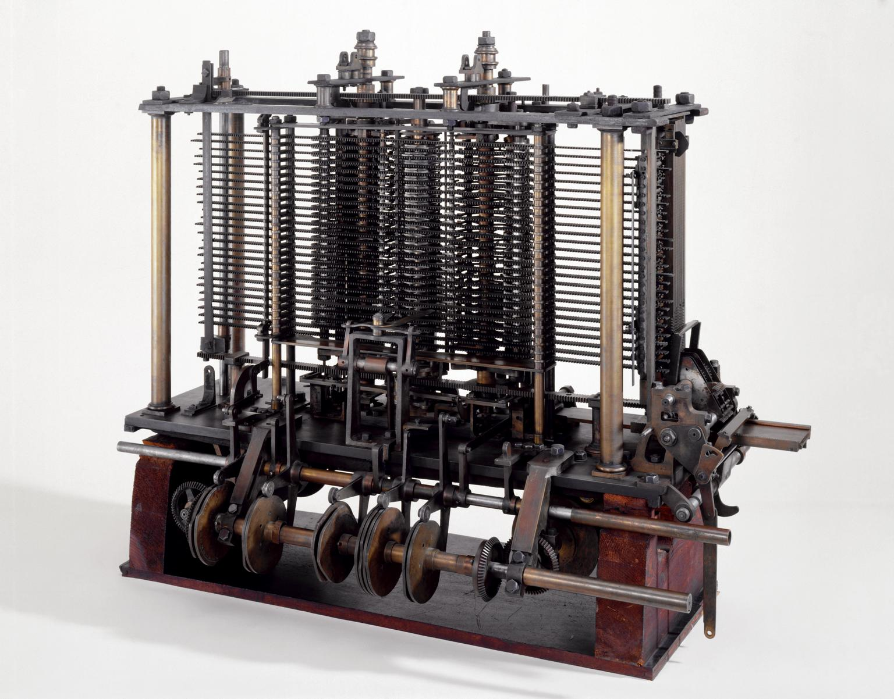
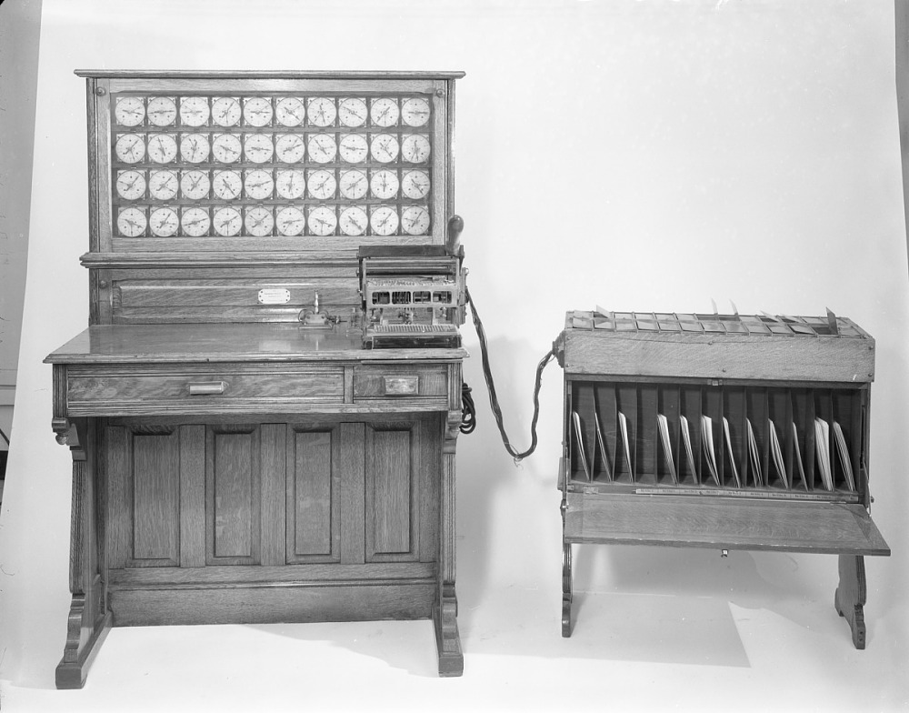
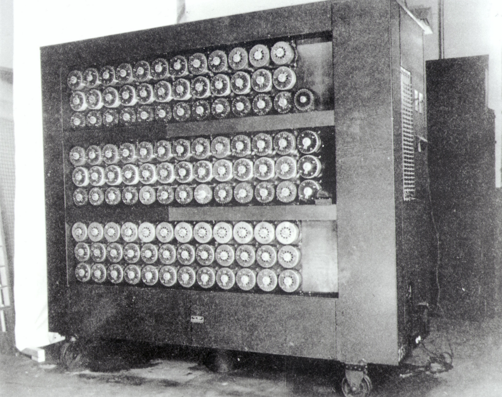

Timeline of Computational Hardware
Early information keeping was completed using a variety of simple physical methods.
An example of an early informational tool was the Incan Quipu.
The sets of strings were knotted to denote agricultural, census, or military records.
A surviving example of an Incan Quipu.
Processing of information has always proved important to any scale of civilization.
Computation was so important that even Confusious considered mastery of the subject a part of becoming a sage.
Computation was a human skill, but humans are imperfect, and leaving the math to humans would cause inaccuracy.
Eventually systems were set up to allow for structured, careful, and double-checked calculations to be regularly carried out.
Organizations were created to compute mathematical tables or almanacs.
One example of an advanced clerical system was the Bankers' Clearing House at 10 Lombard Street in London which allowed banks to process transfers beginning in the early 1800's.
A View of 10 Lombard Street in London where bank representatives worked to clear money transfers in a large-scale clerical system.
As Europe underwent significant modernization during the industrial revolution, many machines were being designed to complete tasks more efficiently and precisely than humans could hope to achieve.
Charles Babbage sought to build a mechanical version of the logical clerical systems to compute information.
The first example of this process was shown in a constrained manner in the Difference Engine.
However, Babbage sought to generalize his computational machine into a general programmable computer.
Through combined effort with Ada Lovelace, the duo conceived of the Analytical Engine.
Although the Analytical Engine was never fully constructed, the design contained most of the components that would eventually constitute the modern digital computer architecture.

A portion of Babbage and Lovelace's Analytical Engine.
As industrial quality continued to improve society, more people would attempt to utilize mechanisms to compute information.
An important innovation was made by Herman Hollerith to use electrical systems to quickly process census data.
Using machines designed to read information off punch cards, Hollerith's system computed United States census information more efficiently than ever.
Hollerith's determination and leadership pushed data processing into a new age with electro-mechanical computational systems at the forefront.

Herman Hollerith's Tabulating Machine which was used for the 1890 United States census.
War forces humans to toil and innovate for any advantage, and World War II forced development on a scale never before seen.
On both sides, governments pushed scientists and engineers to seek out any benefit that could influence the war's outcome.
This pressure resulted in significant development in informational technology as each side desired to keep their communication secret and listen into the enemy's conversations.
German forces utilized an electro-mechanical encoding device called the Enigma to keep information out of Allied hands.
This device relentlessly encoded and decoded messages to a standard previously unseen.
As a response to the Enigma device, the Allies built significant computational machines to find the Enigma decoding settings.
A team from the United Kingdom's Bletchley Park designed the Bombe electro-mechanical computing device.
Originally based on the Polish crypto-analysts Bomba, the new machine's design was lead by Alan Turing.
Alan Turing and the team at Bletchley Park exploited a number of computers advantages and notable German process deficiencies to reliably break the Enigma enciphering.
The use, scale, and success of computational equipment was revolutionary and set the stage for further development into more generalized equipment following the war.
Unfortunately, the mastermind of the wartime efforts was unable to continue computational development following the war as Alan Turing took his own life following governmental persecution for being homosexual.

Alan Turing's Bombe Enigma Decoding Machine designed at Bletchley Park during World War II.
Towards the end of World War II, computers were being designed to finally realize Babbage's dream of a general purpose programmable computer.
Previous computers utilized electro-mechanical components to process logic.
This required the computation to wait for physical objects to move to allow logic to proceed.
At the end of World War II the ENIAC was constructed as the first computer to use vacuum tubes, a solid-state alternative to the electro-mechanical logic processors.
ENIAC became the first general purpose, programable, digital computer working with logical trues and falses instead of physical movements.
Vacuum tubes allowed the computer to be much more efficient and most importantly much easier to change.
The ENIAC utilized a system of plugboards which allowed operators to change the logic of the computer as required.
It was able to be utilized for a variety of tasks and to be altered when a new problem needed solving.

The ENIAC Programmable Digital Computer was the first general purpose programmable computer.
Solid-state logic gates were obviously the future of computing, but vacuum tubes were not the final example.
Invented in 1947, the transistor was made of a solid-state semiconductor with electrical properties in certain sections being able to be controlled by electrical impulses in another area.
The transistor was fundamentally simpler than a vacuum tube and did not require as specific an enclosure and environment.
This allowed the transistor to be miniaturized into extremely efficient and packageable logical gates.
Advances in material science and quality allowed fabrication plants to produce semiconductor chips with exponentially increasing multitudes of computational power.
As semiconductor based computers became more accessible and miniaturized, designers began to combine functionality from many racks of vacuum tube computers onto a single semiconductor wafer.
This trend eventually led to the Intel 4004, the first microprocessor, which managed to fit all the requirements of a digital computer's logic on a single chip.

The Intel 4004 microprocessor fit all computer calculation logic onto a single chip for the first time.